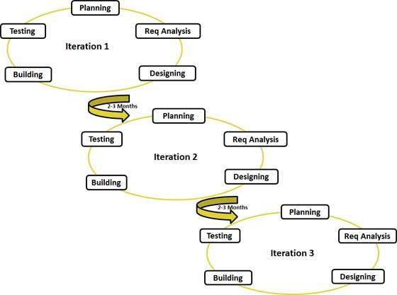

Η Κατασκευή λογισμικού (Software construction) είναι μέρος της μηχανικής λογισμικού. Σκοπός της είναι να κατασκευάσει λογισμικό συνδυάζοντας κώδικα, έλεγχο ή επαλήθευση, τεστ, αποσφαλμάτωση και γενικά «καλό» λογισμικό με κριτήρια που αναφέρονται παρακάτω.
Οι όροι κατασκευή λογισμικού και προγραμματισμός θα έχουν την ίδια έννοια και θα χρησιμοποιούνται εναλλακτικά στη συνέχεια.
Ασχολείται με το σχεδιασμό, ανάπτυξη και συντήρηση λογισμικού και καλύπτει το μέρος της κατασκευής λογισμικού.
Στην ανάπτυξη λογισμικού έχουμε τις παρακάτω φάσεις:
Καθορίζει τις απαιτήσεις της εφαρμογής.
Γίνεται ο σχεδιασμός που περιλαμβάνει προδιαγραφές, περιγραφή, γραφικά (UML). Γενικά είναι ο «επί χάρτου» σχεδιασμός.
Στη φάση αυτή υλοποιείται η εφαρμογή σε μορφή κώδικα. Η υλοποίηση ακολουθεί μία σειρά από στάδια ή φάσεις, ελέγχους, αποσφαλμάτωση, τεστ, αξιολόγηση, εγκατάσταση κ.λπ. Όλα τα παραπάνω, και άλλα σχετικά θέματα, θα παρουσιαστούν αναλυτικά στο μάθημα αυτό.
Συστηματικός έλεγχος του λογισμικού για να αποκαλυφθούν λάθη (bugs).
Ο εντοπισμός και διόρθωση σφαλμάτων.
Η εγκατάσταση λογισμικού σε πραγματικό περιβάλλον έτοιμο για χρήση.
Η συντήρηση λογισμικού είναι απαραίτητη και σκοπός της είναι να διορθώνει λάθη που θα παρουσιαστούν, βελτιώσεις που θα χρειαστούν, προσαρμογές που θα απαιτηθούν.
Ανεξάρτητα της προσέγγισης, μεθοδολογίας, εργαλείων κ.λπ. που θα χρησιμοποιηθούν στη κατασκευή λογισμικού τα κριτήρια αξιολόγησης είναι:
Πόσο συχνά σωστά είναι τα αποτελέσματα του προγράμματος.
Πόσο ικανοποιητικά αντιμετωπίζει ή διαχειρίζεται τα errors (όχι bugs).
Πόσο χρηστικό είναι στον χρήστη. Αυτό κρίνεται από το πόσο φιλικό στο χρήστη είναι το περιβάλλον εργασίας.
Πόσο φορητό είναι σε διαφορετικά συστήματα με διαφορετικό υλικό ή / και λογισμικό.
Η ευκολία με την οποία μπορεί το πρόγραμμα να βελτιωθεί, να επεκταθεί, να διορθωθεί, να προσαρμοστεί σε νέα δεδομένα.
Εξαρτάται από τη σωστή διαχείριση πόρων και ταχύτητα του λογισμικού.
Σημαντικό κριτήριο. Εκφράζει την ευκολία με την οποία ο προγραμματιστής μπορεί να διαβάσει και να κατανοήσει τον κώδικα.
Από όλα τα παραπάνω υπολογίσιμα κριτήρια τα παρακάτω ίσως είναι τα πιο σημαντικά που πρέπει να προσέχει ένας προγραμματιστής.
Παράγοντες που λαμβάνονται υπόψη από τον αναλυτή (αρχιτέκτονα λογισμικού - συστήματος)
Γενική περιγραφή του συστήματος (ίσως UML).
Ποιες είναι οι κυρίες κλάσεις – οντότητες.
Οι πηγές δεδομένων όπως αρχεία, βάσεις δεδομένων και πως αυτά θα σχεδιαστούν.
Όπως η απαίτηση το περιεχόμενο να ανανεώνεται κάθε ήμερα.
Είναι ένα μεγάλο κεφάλαιο και ασχολούνται πλέον ειδικοί. Σε κάθε περίπτωση ο σχεδιαστής πρέπει να συνεργάζεται με τον προγραμματιστή.
Είναι οι πόροι αρκετοί να καλύψουν τις ανάγκες του έργου;
Πρέπει να ακολουθηθούν συγκεκριμένες οδηγίες που θα παρέχουν ασφάλεια όπως από εισαγωγή δεδομένων σε φόρμες, cookies, κρυπτογραφία κ.λπ.
Γίνεται εκτίμηση προτεραιοτήτων ανάμεσα σε ταχύτητα, πόρους και κόστος.
Κατά πόσο το σύστημα μπορεί να επεκταθεί σε μελλοντικές ανάγκες και κατά πόσο έχει σχεδιαστεί σωστά για αυτή τη δυνατότητα.
Μπορεί να συνεργάζεται με άλλα συστήματα, λογισμικό κ.λπ.
Όταν το πρόγραμμα παρέχει δυνατότητα για πολλαπλό Localization. Localization η διαδικασία “μετάφρασης” του προγράμματος σε άλλη γλώσσα.
Ένα από τα σημαντικά θέματα στο χώρο του προγραμματισμού.
Κάθε γλώσσα έχει το πλεονεκτήματά της και τα μειονεκτήματά τους. Και ο προγραμματιστής πρέπει να διαλέξει την κατάλληλη για κάθε έργο.
Γενικής χρήσης γλώσσα σχετισμένη περισσότερο με το λειτουργικό UNIX. Θεωρείται για πολλούς ως μητέρα γλώσσα και για άλλες γλώσσες.
Αντικειμενοστρεφής γλώσσα βασισμένη επάνω στη C. Παρέχει όλα τα καλά της αντικειμενοστέφειας όπως classes, polymorphism, exception handling, templates κ.λπ.
Γενικής χρήσης αντικειμενοστρεφής γλώσσα αναπτυγμένη από τη Microsoft για τη δική της πλατφόρμα. Είναι παρόμοια της C, C++, και Java.
Γενικής χρήσης αντικειμενοστρεφής γλώσσα αναπτυγμένη αρχικά από τη Sun Microsystems και τώρα από την Oracle.
Για να τρέξουν οι εφαρμογές της java χρειάζονται τη JVM (java virtual machine). Αρκετά δημοφιλής ειδικότερα σε εφαρμογές web.
Η javascript είναι μια σκριπτ γλώσσα και χρησιμοποιείται για δυναμικές ιστοσελίδες στη μεριά του πελάτη (client side).
Βασίζεται στη C και UNIX utilities. Χρησιμοποιείται περισσότερο από διαχειριστές συστήματος. “Perl” ακρωνύμιο του Practical Extraction and Report Language.
Γλώσσα σκριπτ και open-source. Χρησιμοποιείται για διαδικτυακές εφαρμογές στη μεριά του server (server side).
Μια αντικειμενοστρεφής γλώσσα τύπου σκριπτ και χρησιμοποιείται σε πολλά περιβάλλοντα. Βρίσκει εφαρμογή περισσότερο σε διαδικτυακές εφαρμογές.
Υποστηρίζεται από τη Microsoft για τη δική της πλατφόρμα.
Γλώσσα ερωτημάτων (query language). Χρησιμοποιείται για τη διαχείριση δεδομένων σε βάσεις δεδομένων.
Οι μεθοδολογίες που συναντάμε είναι:
Ακολουθεί τις φάσεις (Ανάλυση, σχεδιασμός, υλοποίηση, τεστ, εγκατάσταση και συντήρηση).
Με το μοντέλο αυτό το τελικό προϊόν παραδίδεται αφού πρώτα ολοκήρωθεί η ανάλυση μετά ο σχεδιασμός κ.λπ.
Σε κάθε φάση μπορούμε να γυρίσουμε σε κάποια προηγούμενη αν χρειαστεί και αυτό μπορεί να επαναλαμβάνεται μέχρι την τελική παράδοση.

Και το μοντέλο αυτό ακολουθεί τις φάσεις (Ανάλυση, σχεδιασμός, υλοποίηση, τεστ, εγκατάσταση και συντήρηση).
Με το μοντέλο αυτό το προϊόν παραδίδεται τμηματικά. Αρχικά παραδίδεται ένα πρώτo προϊόν και στη συνέχεια επαναλαμβάνεται πάλι η ίδια διαδικασία μέχρι να ολοκληρωθεί το έργο.
